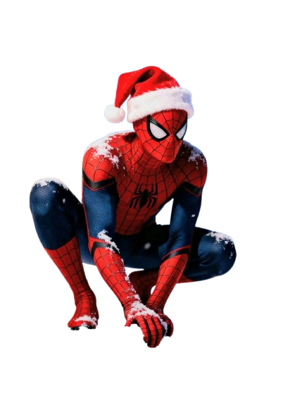
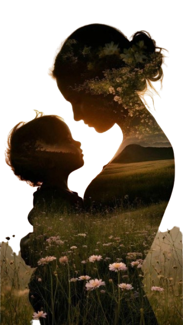
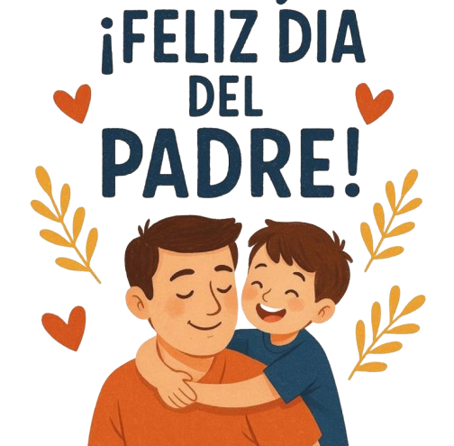

BIENVENIDO A TU PAGINA
INICIANDO LA EXPERIENCIA...
MENU DE IDEAS
LO QUE TU MENTE
PUEDA IMAGINAR
.
JOHAN GARCIA
MANUALIDADES & IDEAS
Hide Light
SELECCIONA UN NODO DE LA ÓRBITA PARA EXPLORAR
Halloween
Día de Muertos

Navidad

Día de las Madres

Día del Padre